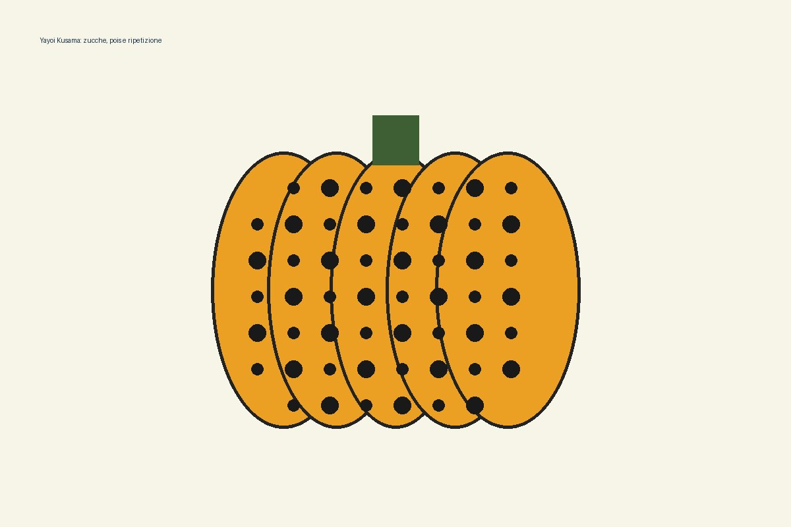

Si disegna una grande zucca e si dividono le superfici in sezioni verticali leggibili.
Classi prime • arte contemporanea • pattern e colore
Le zucche di Yayoi Kusama
Un’attività dedicata a Yayoi Kusama e al suo linguaggio fatto di pois, ripetizione e contrasti cromatici. Gli alunni reinterpretano il tema della zucca, lavorando su linea, forma, colore, valore e ritmo visivo.

Presentazione dell’attività
Fantasia, ripetizione e volume
La presentazione introduce l’artista e accompagna il lavoro passo passo: disegno della zucca, definizione delle sezioni, uso del chiaroscuro e inserimento dei pois, più grandi al centro e più piccoli verso i bordi per rafforzare il volume.
Apri la presentazione su Canva ↗Fasi del lavoro
Dal disegno al pattern
Bianco, arancio e tonalità più scure aiutano a costruire luce, ombra e volume.
I pois diventano un pattern: cambiano dimensione e ritmo seguendo la forma della zucca.